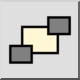

Send to Back
แถบเครื่องมือ / ไอคอน:

เมนู: แก้ไข > ลำดับการวาด > Send to Back
ทางลัด: M, B
คำสั่ง: toback | mb
คำอธิบาย
เปลี่ยนลำดับที่เอนทิตีถูกแสดง ใช้เครื่องมือนี้เพื่อส่งเอนทิตีที่บังเอนทิตีอื่นไปยังพื้นหลัง
การใช้งาน
- เลือกเอนทิตีที่จะย้ายไปยังพื้นหลังของแบบวาด
- เริ่มเครื่องมือนี้